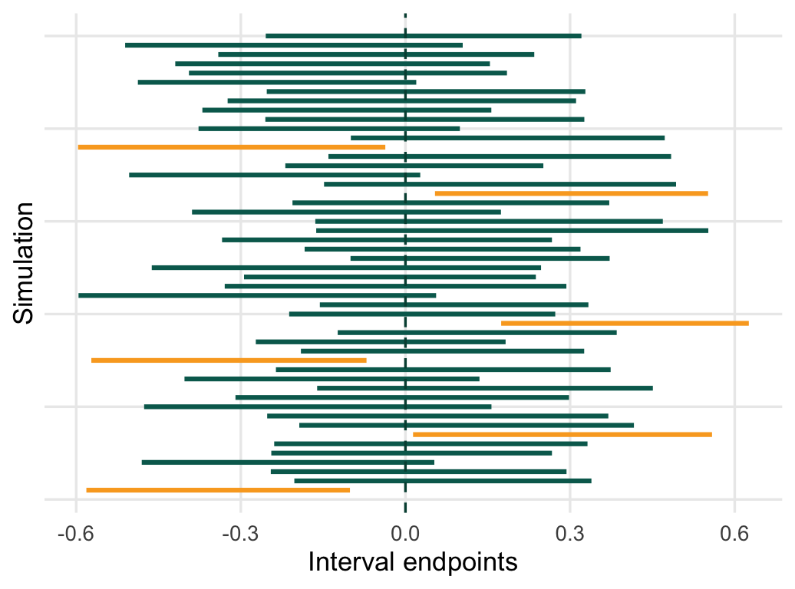

Chapter 5: Confidence Intervals
STA258: Statistics with Applied Probability
University of Toronto Mississauga

Chapter Roadmap
1 - One Sample Means, proportions, and variances. Decide between \(Z\), \(t\), and \(\chi^2\).
2 - Two Sample Differences in means, differences in proportions, and ratios of variances.
3 - Planning Choose \(n\) so a confidence interval reaches a target margin of error.
Core skill Identify the parameter before choosing the formula.
Core tool Use qnorm(), qt(), qchisq(), and qf() for critical values.
Core habit Interpret the interval in context, with units.
Point Estimates and Interval Estimates
Point estimate
A single numerical value computed from sample data that serves as the best guess of an unknown population parameter.
Examples: \(\bar{x}\) estimates \(\mu\), \(s^2\) estimates \(\sigma^2\), and \(\hat p\) estimates \(p\).
Confidence interval
A plausible range of values for a population parameter, built from sample data and a specified confidence level.
Big idea. A statistic will usually not equal the parameter exactly. The interval tells us how far away the statistic could reasonably be.
The CI Skeleton
All confidence intervals in this chapter are variations of:
\[ \text{estimate} \pm \underbrace{(\text{critical value})(\text{standard error})}_{\text{margin of error}} \]
Estimate \(\bar{x}\), \(\hat p\), \(\bar{x}_1-\bar{x}_2\), \(\hat p_1-\hat p_2\), \(s^2\), or \(s_1^2/s_2^2\).
Critical value From \(Z\), \(t\), \(\chi^2\), or \(F\), depending on the sampling distribution.
Standard error The standard deviation of the estimator, or an estimate of it.
Interpreting Confidence
For a \(C\%\) confidence interval:
In repeated sampling, about \(C\%\) of intervals constructed using this method will capture the true parameter.
Do not say: “There is a 95% probability that this particular interval contains \(\mu\).”
The parameter is fixed. The random object is the interval produced by the sample.
CI Reference Guide
| Target parameter | Situation | Reference distribution | Interval shape |
|---|---|---|---|
| \(\mu\) | one mean, \(\sigma\) known | \(Z\) | \(\bar{x}\pm z^*\sigma/\sqrt n\) |
| \(\mu\) | one mean, \(\sigma\) unknown | \(t_{n-1}\) | \(\bar{x}\pm t^*s/\sqrt n\) |
| \(p\) | one proportion | \(Z\) | \(\hat p\pm z^*\sqrt{\hat p(1-\hat p)/n}\) |
| \(\sigma^2\) | one variance, normal population | \(\chi^2_{n-1}\) | asymmetric |
| \(\mu_1-\mu_2\) | two independent means | \(Z\) or \(t\) | difference \(\pm\) margin |
| \(p_1-p_2\) | two independent proportions | \(Z\) | difference \(\pm\) margin |
| \(\sigma_1^2/\sigma_2^2\) | ratio of variances | \(F\) | asymmetric |
| \(\mu_d\) | paired data | \(t_{n-1}\) | \(\bar d\pm t^*s_d/\sqrt n\) |
Quick Critical Values
| Confidence level | \(z^*\) |
|---|---|
| 90% | 1.645 |
| 95% | 1.960 |
| 99% | 2.576 |
R check qnorm(0.95), qnorm(0.975), and qnorm(0.995) give these values.
Interactive One-Mean Calculator
Try changing the confidence level. The estimate stays fixed, but the critical value and margin of error change.
Calculator note The \(t\) option uses a small built-in table for common confidence levels and degrees of freedom. Use R for exact values.
One Mean, Sigma Known
When the population standard deviation \(\sigma\) is known:
\[ \bar{x} \pm z_{\alpha/2}\frac{\sigma}{\sqrt n} \]
Use this for a population mean \(\mu\) with known \(\sigma\).
Assumptions - Random sample or randomized experiment. - Independent observations. - Population is normal, or \(n\) is large enough for the CLT.
Exam cue If the problem gives a population standard deviation, use \(z\). If it gives a sample standard deviation, use \(t\).
Example 1: Known Sigma - Magazine Readers
In-Class Example Playbill magazine reports \(\bar{x}=119{,}155\) dollars from \(n=80\) households. Assume \(\sigma=30{,}000\) dollars.
Construct 90%, 95%, and 99% confidence intervals for the population mean household income of readers.
| Level | Critical value | Margin of error | Confidence interval |
|---|---|---|---|
| 90% | 1.645 | \(1.645(30000/\sqrt{80})=5517.38\) | \((113637.62, 124672.38)\) |
| 95% | 1.960 | \(1.960(30000/\sqrt{80})=6573.04\) | \((112581.96, 125728.04)\) |
| 99% | 2.576 | \(2.576(30000/\sqrt{80})=8640.41\) | \((110514.59, 127795.41)\) |
We are 95% confident that the mean household income of Playbill readers is between about 112,582 dollars and 125,728 dollars.
Example 2: Known Sigma - Car Sales
Practice Example Annual car sales are normally distributed with known \(\sigma=15\). For a random sample of 15 salespeople:
\[79,43,58,66,101,63,79,33,58,71,60,101,74,55,88\]
Construct a 95% CI for \(\mu\).
\(\bar{x}=68.6\), so the interval is approximately \((61.01, 76.19)\). We are 95% confident that the population mean number of cars sold annually is between about 61 and 76.
Quiz: Known Sigma
Quick Check
A sample has \(\bar{x}=42\), \(n=36\), and known \(\sigma=12\). For a 95% CI, what is the margin of error?
- 1.96
- 3.92
- 4.00
- 7.84
One Mean, Sigma Unknown
When \(\sigma\) is unknown, estimate it with \(s\) and use the Student \(t\) distribution:
\[ \bar{x} \pm t_{n-1,\alpha/2}\frac{s}{\sqrt n} \]
Why t? Replacing \(\sigma\) with \(s\) adds uncertainty. The \(t\) distribution has heavier tails, especially for small degrees of freedom.
Small samples For small \(n\), check that the population is reasonably normal or that the sample has no severe skew/outliers.
Example 1: Unknown Sigma - Ancient Air
In-Class Example Nitrogen percentages from air bubbles trapped in ancient amber:
\[63.4,65.0,64.4,63.3,54.8,64.5,60.8,49.1,51.0\]
Construct a 90% CI for the mean nitrogen percentage.
Using \(n=9\), \(\bar{x}=59.5889\), \(s=6.2553\), and \(t^*=1.8595\):
\[59.5889\pm1.8595\frac{6.2553}{3}=(55.71,63.47).\]
Example 2: Unknown Sigma - Camera Photos
Practice Example A random sample of 10 digital camera owners has stored photo counts:
\[25,6,22,26,31,18,13,20,14,2\]
Construct a 95% CI for the population mean number of stored photos.
\(\bar{x}=17.7\), \(s=9.0805\), \(df=9\), and \(t^*=2.262\). The 95% CI is approximately \((11.20,24.20)\) photos.
One Proportion
For a population proportion \(p\), with \(\hat p=x/n\):
\[ \hat p \pm z_{\alpha/2}\sqrt{\frac{\hat p(1-\hat p)}{n}} \]
Conditions - Random sample. - Independent Bernoulli trials. - Large counts: \(n\hat p \ge 10\) and \(n(1-\hat p)\ge 10\).
Boundary check The final interval should make sense for a proportion. Values below 0 or above 1 need careful handling.
Example 1: One Proportion - Transit Use
In-Class Example A university survey asks 1200 students whether they use public transportation. Among them, 738 say yes.
Construct a 95% CI for the true proportion of students who use public transportation.
\[ \hat p=\frac{738}{1200}=0.6150 \]
\[ SE=\sqrt{\frac{0.6150(0.3850)}{1200}}=0.01405 \]
\[ 0.6150\pm1.96(0.01405)=(0.5875,0.6425) \]
We are 95% confident that between 58.75% and 64.25% of students use public transportation.
Example 2: One Proportion - Work From Home
Practice Example In a survey of 650 employees, 286 prefer working from home at least three days per week.
Construct a 90% CI for the population proportion.
\(\hat p=0.44\), so the 90% CI is approximately \((0.4079,0.4721)\).
Quiz: Proportion Conditions
Quick Check
For a one-proportion confidence interval, which sample has enough successes and failures for the normal approximation?
- \(n=20\), \(\hat p=0.90\)
- \(n=50\), \(\hat p=0.10\)
- \(n=100\), \(\hat p=0.20\)
- \(n=15\), \(\hat p=0.50\)
One Variance
For a normally distributed population, a confidence interval for \(\sigma^2\) is:
\[ \left( \frac{(n-1)s^2}{\chi^2_{\alpha/2,n-1}}, \frac{(n-1)s^2}{\chi^2_{1-\alpha/2,n-1}} \right) \]
This interval is asymmetric. Normality matters here much more than it does for large-sample mean intervals.
Example 1: One Variance - Bottle Filling
In-Class Example A random sample of 25 bottles has sample variance \(s^2=12.5\). Assume filling amounts are normally distributed.
Construct a 95% CI for \(\sigma^2\).
\[df=24,\quad \chi^2_{0.975,24}=39.364,\quad \chi^2_{0.025,24}=12.401\]
\[ \text{Lower}=\frac{24(12.5)}{39.364}=7.62,\qquad \text{Upper}=\frac{24(12.5)}{12.401}=24.19 \]
The 95% CI for the population variance is approximately \((7.62,24.19)\).
Example 2: One Variance - Reaction Times
Practice Example A random sample of 16 drivers has sample variance \(s^2=0.36\). Assume reaction times are normally distributed.
Construct a 90% CI for \(\sigma^2\).
The 90% CI is approximately \((0.2160,0.7437)\).
Two Independent Means: Both Sigmas Known
When both population standard deviations are known:
\[ (\bar{x}_1-\bar{x}_2)\pm z_{\alpha/2} \sqrt{\frac{\sigma_1^2}{n_1}+\frac{\sigma_2^2}{n_2}} \]
Reality check This case is uncommon in practice because population standard deviations are rarely known. We will use one worked example, then focus on the more realistic \(t\) intervals.
Example: Two Means, Both Sigmas Known
In-Class Example Two independent samples compare average weekly study time.
Group 1: \(n_1=40\), \(\bar{x}_1=12.4\), known \(\sigma_1=3.2\).
Group 2: \(n_2=35\), \(\bar{x}_2=10.9\), known \(\sigma_2=2.8\).
Construct a 95% CI for \(\mu_1-\mu_2\).
\[ \bar{x}_1-\bar{x}_2=1.5 \]
\[ SE=\sqrt{\frac{3.2^2}{40}+\frac{2.8^2}{35}}=0.6928 \]
\[ 1.5\pm1.96(0.6928)=(0.1421,2.8579) \]
We are 95% confident that Group 1 studies between 0.14 and 2.86 more hours per week on average than Group 2.
Two Means: Unknown but Equal Variances
If the two population variances are unknown but assumed equal:
\[ (\bar{x}_1-\bar{x}_2)\pm t_{n_1+n_2-2,\alpha/2} s_p\sqrt{\frac{1}{n_1}+\frac{1}{n_2}} \]
where
\[ s_p^2=\frac{(n_1-1)s_1^2+(n_2-1)s_2^2}{n_1+n_2-2}. \]
Example 1: Pooled t - Training Programs
In-Class Example Two independent training programs are compared on test scores.
Program A: \(n_1=12\), \(\bar{x}_1=84.2\), \(s_1=5.1\).
Program B: \(n_2=10\), \(\bar{x}_2=79.4\), \(s_2=4.7\).
Assume equal population variances. Construct a 95% CI for \(\mu_1-\mu_2\).
\[ s_p^2=\frac{11(5.1^2)+9(4.7^2)}{20}=24.254,\quad s_p=4.925 \]
\[ SE=4.925\sqrt{\frac{1}{12}+\frac{1}{10}}=2.106,\quad t^*_{20}=2.086 \]
\[ 4.8\pm2.086(2.106)=(0.41,9.19) \]
Example 2: Pooled t - Battery Life
Practice Example Battery A: \(n_1=15\), \(\bar{x}_1=31.4\), \(s_1=2.6\).
Battery B: \(n_2=14\), \(\bar{x}_2=29.8\), \(s_2=2.2\).
Assume equal variances. Construct a 90% CI for \(\mu_1-\mu_2\).
The 90% CI is approximately \((0.10,3.10)\) hours.
Two Means: Unknown and Unequal Variances
For unequal unknown variances, use Welch’s interval:
\[ (\bar{x}_1-\bar{x}_2)\pm t_{df,\alpha/2} \sqrt{\frac{s_1^2}{n_1}+\frac{s_2^2}{n_2}}. \]
Degrees of freedom Software uses the Welch-Satterthwaite approximation. A conservative hand approximation is \(df=\min(n_1-1,n_2-1)\).
Example 1: Welch t - Sodium Content
In-Class Example Adult frozen meals: \(n_1=20\), \(\bar{x}_1=720\), \(s_1=150\).
Children’s frozen meals: \(n_2=18\), \(\bar{x}_2=610\), \(s_2=120\).
Assume unequal variances. Construct a 95% CI for \(\mu_1-\mu_2\).
\[ SE=\sqrt{\frac{150^2}{20}+\frac{120^2}{18}}=\sqrt{1925}=43.875 \]
Using Welch \(df\approx35.55\), \(t^*\approx2.030\):
\[ 110\pm2.030(43.875)=(20.93,199.07) \]
The interval is entirely positive, suggesting adult meals have a higher mean sodium content.
Example 2: Welch t - Commute Times
Practice Example Campus A: \(n_1=25\), \(\bar{x}_1=42\), \(s_1=12\).
Campus B: \(n_2=22\), \(\bar{x}_2=36\), \(s_2=9\).
Assume unequal variances. Construct a 95% CI for \(\mu_1-\mu_2\).
The 95% CI is approximately \((-0.19,12.19)\) minutes. Because 0 is inside, the data do not clearly show a mean difference.
Quiz: Two Means
Quick Check
Two independent samples have unknown and clearly unequal sample standard deviations. Which interval is usually the best default for \(\mu_1-\mu_2\)?
- Known-sigma \(z\) interval
- Pooled two-sample \(t\) interval
- Welch two-sample \(t\) interval
- One-proportion \(z\) interval
Difference of Proportions
For two independent population proportions:
\[ (\hat p_1-\hat p_2)\pm z_{\alpha/2} \sqrt{ \frac{\hat p_1(1-\hat p_1)}{n_1} + \frac{\hat p_2(1-\hat p_2)}{n_2} } \]
Check large counts in both groups: successes and failures should each be at least 10.
Example 1: Difference of Proportions - Transit
In-Class Example At Campus 1, 180 of 300 students use transit. At Campus 2, 150 of 280 students use transit.
Construct a 95% CI for \(p_1-p_2\).
\[ \hat p_1=0.6000,\quad \hat p_2=0.5357,\quad \hat p_1-\hat p_2=0.0643 \]
\[ SE=\sqrt{\frac{0.6(0.4)}{300}+\frac{0.5357(0.4643)}{280}}=0.0411 \]
\[ 0.0643\pm1.96(0.0411)=(-0.0163,0.1449) \]
The interval includes 0, so the sample does not clearly indicate a difference in transit-use proportions.
Example 2: Difference of Proportions - App Preference
Practice Example In group A, 96 of 160 students prefer App A. In group B, 72 of 150 students prefer App A.
Construct a 90% CI for \(p_1-p_2\).
The 90% CI is approximately \((0.0267,0.2133)\). Group A’s preference proportion appears higher.
Ratio of Variances
For two normal populations, a confidence interval for \(\sigma_1^2/\sigma_2^2\) can be written as:
\[ \left( \frac{s_1^2/s_2^2}{F_{\alpha/2,n_1-1,n_2-1}}, \frac{s_1^2/s_2^2}{F_{1-\alpha/2,n_1-1,n_2-1}} \right) \]
This method is sensitive to non-normality. Always check whether normality is a reasonable assumption before trusting an \(F\) interval for variances.
Example 1: Ratio of Variances - Machines
In-Class Example Machine 1: \(n_1=12\), \(s_1^2=18\). Machine 2: \(n_2=10\), \(s_2^2=10\).
Assuming normal populations, construct a 95% CI for \(\sigma_1^2/\sigma_2^2\).
The 95% CI is approximately \((0.45,6.48)\). Since 1 is inside, equal variances are plausible.
Example 2: Ratio of Variances - Labs
Practice Example Lab A: \(n_1=15\), \(s_1^2=4.8\). Lab B: \(n_2=13\), \(s_2^2=1.9\).
Construct a 90% CI for \(\sigma_1^2/\sigma_2^2\).
The 90% CI is approximately \((0.93,6.71)\). Since 1 is barely inside, the evidence for different variances is not decisive at this level.
Paired Data
For paired observations, reduce each pair to one difference:
\[d_i=M_{2i}-M_{1i}\]
Then construct a one-sample \(t\) interval for the mean difference:
\[ \bar d \pm t_{n-1,\alpha/2}\frac{s_d}{\sqrt n}. \]
Use paired data when The two measurements come from the same unit, matched units, or before-after observations.
Do not split the pair The pairing is information. Analyze the differences, not the two columns as independent samples.
Example 1: Paired Data - Before and After
In-Class Example Eight students take a diagnostic test before and after a workshop. Differences are after minus before:
\[4,6,3,5,7,2,4,6\]
Construct a 95% CI for the mean improvement.
The 95% CI is approximately \((3.30,5.95)\) points. We are 95% confident that the mean improvement is positive.
Example 2: Paired Data - Reaction Time
Practice Example Six participants complete a task before and after a training session. Let \(d=\) after minus before, in seconds:
\[-1.2,-0.8,-1.5,-0.4,-1.1,-0.9\]
Construct a 90% CI for the mean change.
The 90% CI is approximately \((-1.28,-0.69)\) seconds. Negative values mean the task was completed faster after training.
Sample Size for a Mean
If \(\sigma\) is known and desired margin of error is \(E\):
\[ E=z_{\alpha/2}\frac{\sigma}{\sqrt n} \qquad\Longrightarrow\qquad n=\left(\frac{z_{\alpha/2}\sigma}{E}\right)^2. \]
Always round up.
Example 1: Sample Size for a Mean
In-Class Example A lab measurement has known \(\sigma=0.0068\) grams per liter. Management wants results accurate within \(E=0.005\) with 95% confidence.
How many repeated measurements are needed?
\[ n=\left(\frac{1.96(0.0068)}{0.005}\right)^2=7.10 \]
Round up: the lab needs \(n=8\) measurements.
Example 2: Sample Size for a Mean
Practice Example A planning value is \(\sigma=22.50\) and the desired margin is \(E=2\).
Find the sample size for 90%, 95%, and 99% confidence.
| Level | Critical value | Calculation | Required \(n\) |
|---|---|---|---|
| 90% | 1.645 | \((1.645(22.5)/2)^2=342.41\) | 343 |
| 95% | 1.960 | \((1.960(22.5)/2)^2=486.20\) | 487 |
| 99% | 2.576 | \((2.576(22.5)/2)^2=839.45\) | 840 |
Higher confidence requires a larger sample size when the desired margin of error stays fixed.
Sample Size for a Proportion
For a desired margin of error \(E\):
\[ n=\left(\frac{z^*}{E}\right)^2p^*(1-p^*) \]
where \(p^*\) is a planning value. If there is no prior information, use \(p^*=0.5\).
The value \(p^*=0.5\) is conservative because it maximizes \(p^*(1-p^*)\).
Example 1: Sample Size for a Proportion
In-Class Example A mayoral survey needs to estimate a candidate’s support with 95% confidence and margin of error no greater than 0.03. No prior estimate is available.
\[ n=\left(\frac{1.96}{0.03}\right)^2(0.5)(0.5)=1067.11 \]
Round up: contact at least \(n=1068\) voters.
Example 2: Sample Size for a Proportion
Practice Example In 2007, 15.6% of people in the USA were not covered by health care insurance. Use \(p^*=0.156\) and \(E=0.03\).
Find the required sample size for 95% and 99% confidence.
\[ n_{95}=\left(\frac{1.96}{0.03}\right)^2(0.156)(0.844)=562.54\Rightarrow563 \]
\[ n_{99}=\left(\frac{2.576}{0.03}\right)^2(0.156)(0.844)=970.97\Rightarrow971 \]
The 99% confidence level requires a larger survey because the critical value is larger.
Quiz: Sample Size
Quick Check
When calculating sample size from a margin of error, why do we round up?
- Because formulas always underestimate the standard deviation
- Because sample size must be whole, and rounding down could make the margin of error too large
- Because confidence intervals require even sample sizes
- Because \(z^*\) is only approximate
Choosing the Right CI
| If the problem asks for… | Use… |
|---|---|
| one mean and gives \(\sigma\) | one-sample \(z\) interval |
| one mean and gives \(s\) or raw data | one-sample \(t\) interval |
| one proportion | one-proportion \(z\) interval |
| one variance | chi-square interval |
| difference of means, known \(\sigma_1,\sigma_2\) | two-sample \(z\) interval |
| difference of means, equal variances | pooled two-sample \(t\) interval |
| difference of means, unequal/unspecified variances | Welch two-sample \(t\) interval |
| difference of proportions | two-proportion \(z\) interval |
| ratio of variances | \(F\) interval |
| before-after or matched data | paired \(t\) interval on differences |
Final Checklist
Before calculating - Identify the parameter. - Check one sample vs two sample vs paired. - Check whether the target is a mean, proportion, or variance. - Pick the reference distribution.
After calculating - Include units when relevant. - Interpret in context. - Check whether 0 or 1 has a special meaning. - For sample size, round up.
One slide takeaway. Confidence intervals are not separate tricks. They are the same idea with different estimators, standard errors, and reference distributions.
Up Next
Chapter 6 - Hypothesis Tests
Confidence intervals estimate plausible parameter values. Hypothesis tests ask whether a specific claim about a parameter is compatible with the data.
STA258 | Chapter 5